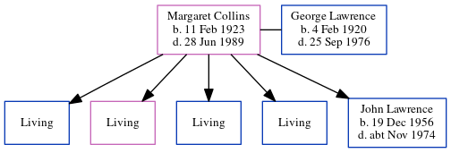

Margaret Mary Josephine Lawrence (née Collins) 1923 - 1989
[ Home ] | [ Calendar ] | [ Surnames Index ] | [ Errors ] | [ Family History ]Margaret Collins, the wife of George Edward Lawrence (the first cousin once-removed on the mother's side of Nigel Horne), was born in Thanet, Kent, England on 11 Feb 19231,2,3 and married George (with whom she had 5 children: Brian George, Valerie Anne, James, Robin and John Edward, along with 4 surviving children) in Thanet around May 19405 (Apr/May/Jun).
During her life, she was living at 1 Church Cottage, Woodnesborough, Kent, England on 29 Sept 19391; at East Gomeldon Road, Salisbury, Wiltshire, England in 1957; and at Flat 16, Royal Road, Ramsgate, Kent in 1989. In 1957 she travelled from Southampton, Hampshire, England to Hong Kong, China, departing on 20 Oct, arriving later that same year.
She died on 28 Jun 1989 in Thanet2,4.
Children
- John Edward was born on 19 Dec 1956
Citations
- 1939 Register - Findmypast (was recorded at this address)
- England & Wales deaths 1837-2007 - Findmypast
- UK Incoming Passenger Lists, 1878-1960 Online publication - Provo, UT, USA: Ancestry.com Operations Inc, 2008.Original data - Board of Trade: Commercial and Statistical Department and successors: Inwards Passenger Lists. Kew, Surrey, England: The National Archives of the UK (TNA). Series BT26,
- England & Wales Government Probate Death Index 1858-2019 - Findmypast
- England & Wales, Marriage Index: 1916-2005 Online publication - Provo, UT, USA: The Generations Network, Inc., 2009.Original data - General Register Office. England and Wales Civil Registration Indexes. London, England: General Register Office. © Crown copyright. Published by permission of the Cont
Media
England & Wales births 1837-2006 Transcription - BMD-B-1923-1-AZ-000265-020
England & Wales marriages 1837-2008 - BMD/M/1940/2/AZ/000315/019
England & Wales deaths 1837-2007 - BMD/D/1989/6/77394381
1939 Register - TNA/R39/1819/1819H/010/25
England & Wales Government Probate Death Index 1858-2019 - GBOR/GOVPROBATE/C/1990-1990/00122956
Family Tree
Map
Generated by ged2site. Last updated on Jul 3, 2024
Known Issues
Residence record for 1989 contains no citation
Residence record for 1957 contains no citation
Listed in the residence for 1957, but spouse George Lawrence is not